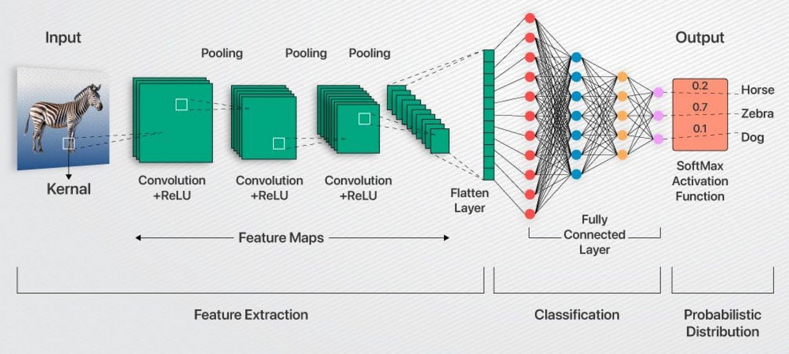

FUNKTIONSWEISE EINER KI-BILDERKENNUNG
Im Grunde geht es darum, dass CNNs ein Bild in viele kleine Muster und Merkmale zerlegen und diese dann schrittweise zu einer abschliessenden Entscheidung (z.B. «Das ist eine Katze») zusammensetzen.

Einfache Erklärung der Funktionsweise
Stellen Sie sich ein CNN wie einen mehrstufigen Detektivprozess vor, der ein Bild untersucht:
-
Der Detektor (Convolutional Layer)
Was es macht: Dies ist die wichtigste Schicht. Sie benutzt Filter (kleine Matrizen), um das gesamte Bild abzutasten. Der Sinn: Jeder Filter sucht nach einem ganz bestimmten Muster, zum Beispiel einer vertikalen Linie, einer Kurve oder einer bestimmten Farbe. Er erzeugt eine «Feature Map», die zeigt, wo dieses Muster im Bild gefunden wurde.
-
Der Redakteur (Pooling Layer)
Was es macht: Nachdem die Muster gefunden wurden, wird die Feature Map komprimiert («gepoolt»). Man nimmt zum Beispiel immer nur den wichtigsten Wert aus einem kleinen Bereich. Der Sinn: Das Netz wird kleiner und schneller. Es lernt, die wichtigen Merkmale zu erkennen, egal an welcher genauen Stelle im Bild sie auftauchen (z. B. eine Nase ist eine Nase, egal ob sie links oder rechts im Bild ist).
-
Der Klassifizierer (Fully Connected Layer)
Was es macht: Die letzten Schichten nehmen die gesammelten, komprimierten Merkmale und kombinieren sie (z. B. «Kurve oben» + «zwei Dreiecke» = Ohr). Der Sinn: Basierend auf all den erkannten Mustern trifft das Netz die endgültige Vorhersage (z. B. 95% Wahrscheinlichkeit für «Hund», 5% für «Katze»).
Anwendungsbereiche
CNNs werden in vielen Bereichen eingesetzt, in denen es ums «Sehen» geht: Bildklassifizierung: Erkennen, was auf einem Foto ist (z. B. Tiere, Autos, Objekte). Objekterkennung: Lokalisieren und Benennen mehrerer Objekte in einem Bild (z. B. in selbstfahrenden Autos). Gesichtserkennung: Entsperren eines Telefons oder Identifizierung von Personen. Medizinische Diagnostik: Analyse von Röntgenbildern oder MRTs zur Erkennung von Krankheiten.